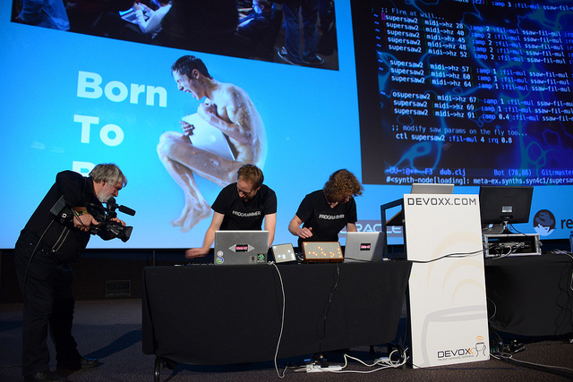

Devoxx 2013
Adil Akther
Jesper de Jong
Gertjan Assies
13-15 November 2013
Adil Akther
Jesper de Jong
Gertjan Assies
13-15 November 2013
(definst dubstep [freq 100 wobble-freq 2]
(let [sweep (lin-exp (lf-saw wobble-freq) -1 1 40 5000)
son (mix (saw (* freq [0.99 1 1.01])))]
(lpf son sweep)))

Its more and more about data, devices talking to each other with human intervention
//Local Actor
val greeterActor = system.actorOf(new Props[GreeterActor](), name="Greeter")
greetActor ! Hello("Gertjan")
//Remote Actor
val greeterActor = system.actorOf(new Props[GreeterActor](), name="Greeter")
greetActor ! Hello("Gertjan")
akka {
actor {
deployment {
/Greeter { remote = akka://MySystem@machine1:2552 }
}
}
}
class Supervisor extends Actor {
override val supervisorStrategy =
OneForOneStrategy(maxNrOfRetries = 10, withinTimeRange = 1 minute) {
case _ : ArithmeticException => Resume
case _ : NullPointerException => Restart
case _ : Exception => Escalate
}
}
| Library | Language | Company |
|---|---|---|
| Akka | Scala, Java | Typesafe |
| Play Framework | Scala, Java | Typesafe |
| RxJava | Java | Netflix |
| Reactor | Java | Springsource |
| Reactive Extensions | .Net | Microsoft |
| Node.js | Javascript | Joyent |
def first() = {
Try(Console.readline("add a nr:")
}
def second() = {
Try(Console.readline("add a nr:")
}
def sum:Try[Int] = {
for (
i <- first
j <- second
} yield i.toInt + j.toInt
}
Functional design
Pattern matching
http://presentation-gassies.rhcloud.com/Devoxx2013.html
https://code.google.com/p/html5slides/